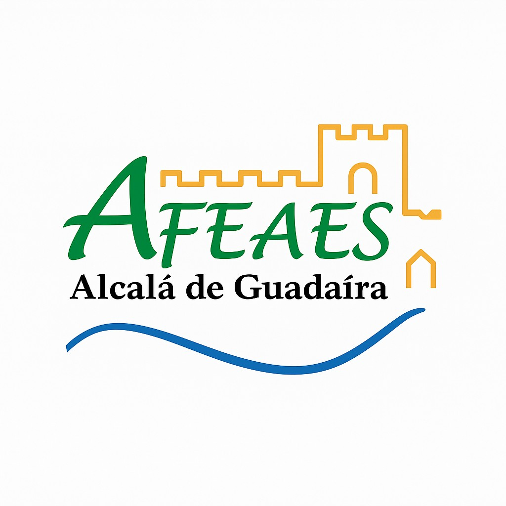

Código ético de AFEAES
En AFEAES creemos en una forma de cuidar basada en el respeto, la cercanía y la dignidad. Nuestro trabajo va más allá de la atención diaria: acompañamos a personas con Alzheimer y otras demencias, así como a sus familias, desde una mirada humana, comprensiva y comprometida.
Este código ético recoge los principios que guían nuestra manera de actuar y que dan sentido a todo lo que hacemos.

Nuestros valores
En AFEAES defendemos la dignidad de cada persona, reconociendo su valor más allá de la enfermedad. Actuamos desde el respeto, la empatía y la cercanía, escuchando cada historia de vida con sensibilidad y cariño.
Nuestro trabajo se apoya también en el compromiso, la profesionalidad, la transparencia y la inclusión, porque entendemos que una atención de calidad debe ser humana, responsable y accesible para todos.
Cómo entendemos el cuidado
Para AFEAES, cuidar es respetar la historia, los tiempos, la identidad y las capacidades de cada persona. Significa ofrecer una atención individualizada, proteger sus derechos, preservar su intimidad y favorecer, siempre que sea posible, su autonomía y participación.
Cuidar también implica acompañar a las familias, comprender sus dificultades y ofrecerles apoyo desde la escucha, la orientación y la cercanía.
Nuestro compromiso con las personas usuarias
Nos comprometemos a ofrecer una atención basada en el buen trato, la escucha y la calidez humana. Queremos que cada persona atendida en AFEAES se sienta respetada, segura, acompañada y reconocida como persona, más allá de su enfermedad.
- Respetar la dignidad de cada persona en todo momento.
- Ofrecer una atención personalizada según sus necesidades y capacidades.
- Favorecer entornos seguros, acogedores y comprensibles.
- Evitar cualquier forma de trato humillante, negligente o despersonalizado.
Nuestro compromiso con las familias
Sabemos que el Alzheimer afecta no solo a quien lo padece, sino también a todo su entorno. Por ello, consideramos a las familias y cuidadores una parte esencial del proceso de acompañamiento.
- Ofrecer un trato cercano, respetuoso y comprensivo.
- Escuchar sus necesidades y preocupaciones con atención.
- Facilitar información clara y útil.
- Favorecer su participación y colaboración en la atención.
- Apoyar emocionalmente dentro de nuestras posibilidades.
Nuestro compromiso como equipo
Todas las personas que forman parte de AFEAES —profesionales, voluntariado, junta directiva y colaboradores— compartimos la responsabilidad de actuar con coherencia, sensibilidad y ética.
- Tratar a todas las personas con respeto y humanidad.
- Mantener la confidencialidad de la información.
- Trabajar de forma coordinada y responsable.
- Rechazar cualquier forma de abuso, maltrato o discriminación.
- Seguir aprendiendo para ofrecer una atención cada vez mejor.
Una asociación guiada por la ética
En AFEAES entendemos que la ética también debe estar presente en la forma de gestionar, decidir y representar a la asociación. Por eso apostamos por una gestión responsable de los recursos, por la transparencia en nuestras actuaciones y por la honestidad en nuestras relaciones con familias, socios, profesionales y entidades colaboradoras.
Queremos seguir construyendo una asociación basada en la confianza, el respeto y la responsabilidad social.
Nuestro rechazo al maltrato y a la deshumanización
En AFEAES mantenemos una posición firme de tolerancia cero frente a cualquier conducta que vulnere la dignidad o el bienestar de una persona.
- Maltrato físico, verbal o psicológico.
- Negligencia o abandono.
- Discriminación o falta de respeto.
- Trato deshumanizado.
- Abuso de poder o aprovechamiento de la vulnerabilidad.
Nuestro compromiso final
En AFEAES creemos que acompañar es estar, escuchar, comprender y cuidar con dignidad.
Este código ético es una expresión de nuestra identidad y de la forma en que queremos relacionarnos con las personas, las familias y la sociedad: desde la cercanía, el respeto y el valor de cada vida.